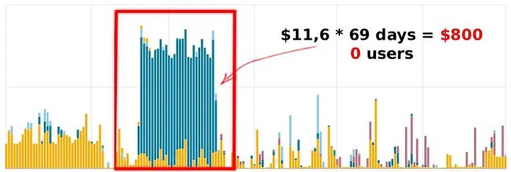
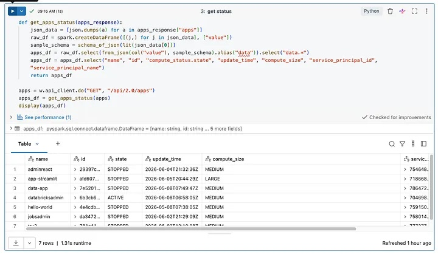
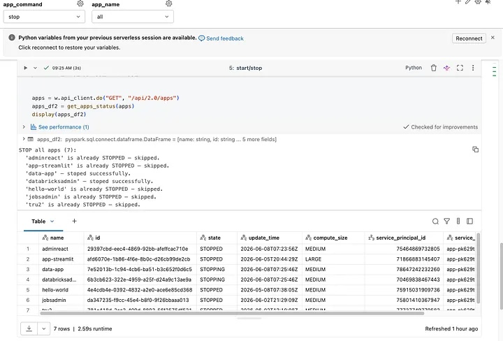
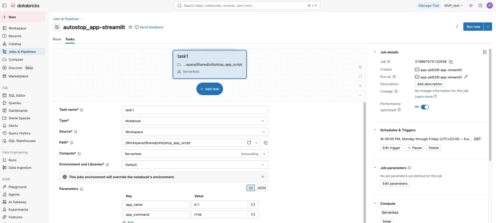
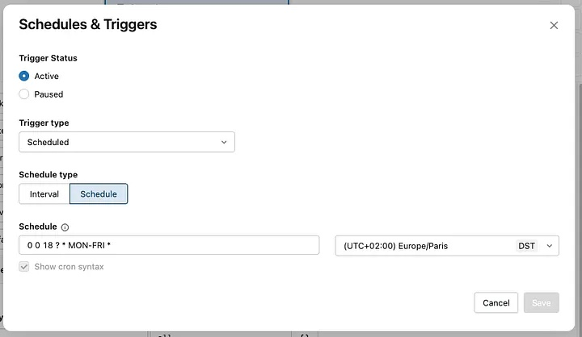
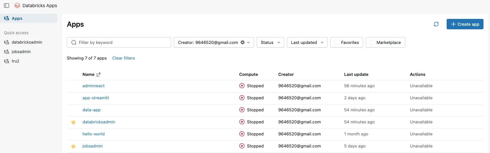

Databricks Apps work well for dashboards, internal tools and demos. They can also keep consuming compute when nobody is using them. A test App that stays active overnight and through weekends can become an unexpected line on the bill.

If an App is needed only during defined hours, use Databricks Jobs to start it before the working day and stop it after. This does not replace on-demand availability, but it is a practical control for Apps with predictable audiences.
Measure the inactive hours first
Start with the App's audience and expected availability. Compare its required hours with the full month. A schedule that covers nine hours on weekdays runs for about 195 hours in a 30-day month, instead of 720 hours for an App left active continuously.
Always active
Pay for every hourAn App remains available overnight and during weekends, whether people use it or not.
Scheduled availability
Pay for the useful windowStart the App before its users arrive and stop it after the planned working period.
The exact saving depends on the schedule and the App's compute size. In the original example, restricting a workday App to scheduled hours reduced its running time enough to cut its cost by 76 percent.
Use the start and stop notebook
The notebook calls the Databricks Apps REST endpoints. It lists Apps, reads their current state and sends a start or stop request only when a change is needed. The two parameters are app_name and app_command.
app_name: all or one App name
app_command: start or stop
GET /api/2.0/apps
POST /api/2.0/apps/{name}/start
POST /api/2.0/apps/{name}/stopUse all to control every App in the workspace, or pass one App name when different tools need different schedules. The notebook skips Apps already starting, active, stopping or stopped, so a retry does not send an unnecessary state change.


Create two jobs
- Import the notebook into the workspace.
- Create a job that runs the notebook with
app_command=start. - Set
app_nametoallor to the specific App name. - Create a second job with the same notebook and
app_command=stop. - Schedule the jobs in the workspace time zone.

Allow time for the App to start. If people need it at 09:00, schedule the start job earlier and confirm the typical startup time. A weekday schedule might start at 08:45 and stop at 18:00. For Quartz cron, the examples are 0 45 8 ? * MON-FRI * and 0 0 18 ? * MON-FRI *.

Make failures visible
Add an email or Slack webhook notification to both jobs. The App should be ready when users need it, and it should stop when the day ends. A failed start job causes a support issue. A failed stop job creates the cost you intended to prevent.
Handle exceptions deliberately
- Use separate schedules for Apps with different business hours.
- Keep an on-call path for Apps that must be started outside the normal window.
- Cover the main usage period, then allow manual starts for rare exceptions.
- Review the schedule when teams or time zones change.
- Run a weekly stop job if test Apps are frequently created and forgotten.

Scheduled start and stop is a simple guardrail. It makes App availability intentional and limits the cost of resources that would otherwise run without an audience.